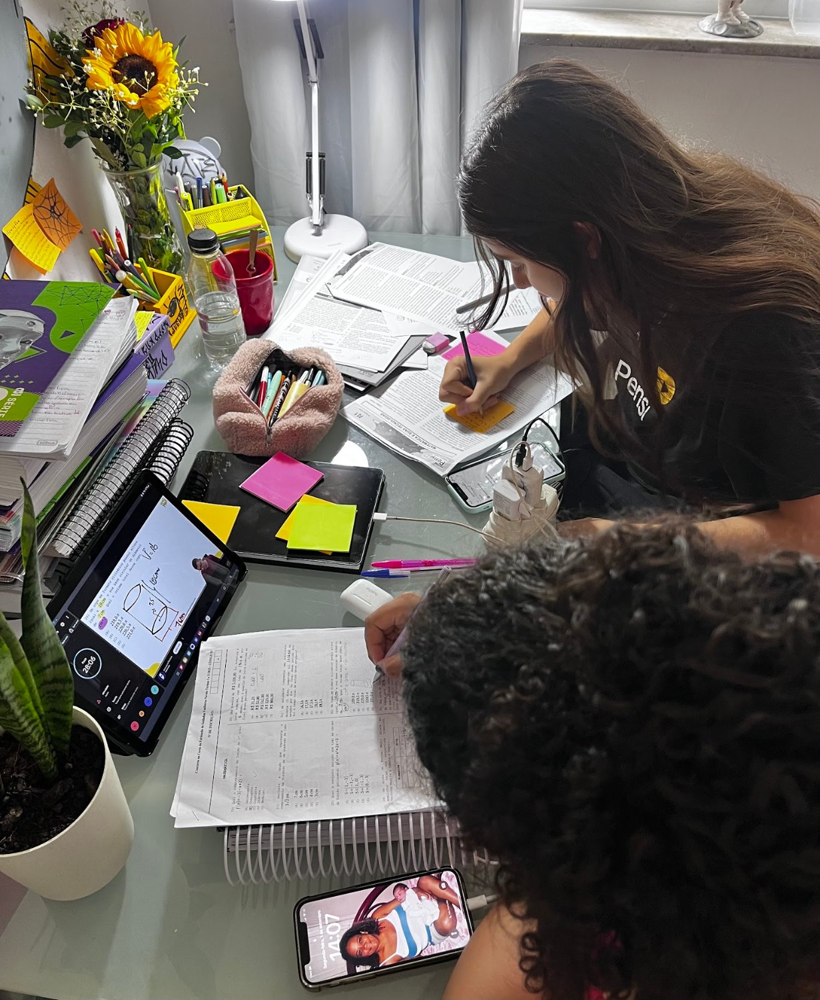

“Glasi é uma profissional de excelência! Tem um olhar acolhedor, crítico e amoroso ao mesmo tempo. Meu filho, que tem 9 anos, se adaptou rapidamente aos atendimentos e adora ir na tia Glasi!”
Psicopedagogia · Santa Rosa, Niterói
Apoio famílias e ajudo crianças e adolescentes a superar desafios na aprendizagem
Psicopedagogia = Desenvolvimento + Aprendizagem
Avaliação e intervenção psicopedagógica com acolhimento, escuta ativa e carinhosa e muito profissionalismo, em parceria com a família e a escola.
Olá, eu sou a Glasi!
5,0
26 avaliações no Google
Atendimento
Para quem é o acompanhamento
O trabalho psicopedagógico vai muito além de melhorar as notas: ele fortalece as habilidades que sustentam a aprendizagem, o comportamento e a autonomia.
Crianças e adolescentes
Com transtornos do neurodesenvolvimento, dificuldades de aprendizagem ou desafios no processo de aprender.
Famílias
Escuta, orientação e acolhimento para entender o que está acontecendo e como apoiar em casa.
Escola e equipe
Ponte com a escola e com a equipe multidisciplinar que acompanha a criança.
No consultório
Aprender de um jeito vivo e personalizado
O foco é fortalecer as habilidades cognitivas e as funções executivas de cada paciente.
MemóriaAtençãoInibiçãoPlanejamentoFlexibilidade cognitivaConsciência fonológica
- Jogos e atividades criativas pensados para cada criança
- Os interesses do paciente viram estratégia, como um álbum de futebol para trabalhar a leitura
- Trabalho com bases científicas e muito carinho

Como funciona
Um caminho feito junto com a família
Acolhimento
Conversa com a família para entender as dúvidas, a história e as necessidades da criança.
Avaliação psicopedagógica
Uma avaliação cuidadosa para identificar pontos importantes e trazer direcionamentos assertivos.
Intervenção
Atendimentos que desenvolvem as habilidades necessárias para a construção da aprendizagem.
Sobre mim
Prazer, sou a Glasiele
Construí minha carreira na educação e hoje uso todo esse conhecimento para dar suporte às famílias que buscam avaliação e intervenção psicopedagógica.
- PedagogiaGraduação
- PsicopedagogiaEspecialização
- Gestão EscolarMBA
- NeuropsicopedagogiaEm formação
“As famílias podem esperar de mim acolhimento, escuta ativa e carinhosa e muito profissionalismo no atendimento aos pequenos e adolescentes.”
@glasi.psicopedagoga
Depoimentos
O que as famílias dizem
5,0 · 26 avaliações no Google“Minha filha iniciou a avaliação psicopedagógica […] Mesmo antes da intervenção em si, só no período da avaliação já percebi mudanças incríveis: ela se tornou mais segura para ler, escrever e está muito mais participativa no ambiente escolar.”
“Profissional atenciosa, com escuta ativa com a família e disponível para fazer ponte com a escola e equipe multidisciplinar. É carinhosa e paciente, respeitando as características específicas da criança.”
“Acolheu minhas filhas, uma de 17 anos e outra de 19 anos, com muito carinho e paciência, trazendo resultados visíveis no aprendizado e também na autoestima delas.”
“A Glasi é uma profissional incrível. Ela é uma potência. Ela desenvolve seu trabalho com bases científicas. Ela é muito dedicada e tem muito carinho com todos que a procuram.”
“Depois que comecei a ser atendida por ela eu melhorei MUITO não só na minha vida acadêmica, mas em muitos outros aspectos. Uma profissional pra levar pra vida!”
Contato
Chamar no WhatsApp
Vamos conversar?
Se você está enfrentando desafios com a aprendizagem do seu filho ou da sua filha, me chame no WhatsApp.
WhatsApp(21) 97585-1476
EndereçoR. Noronha Torrezão, 24
Santa Rosa, Niterói – RJ, 24240-182
Santa Rosa, Niterói – RJ, 24240-182
Entrada acessível · Estacionamento no local
Horários
Seg a Sex9h às 18hSáb e DomFechado
Instagram@glasi.psicopedagoga